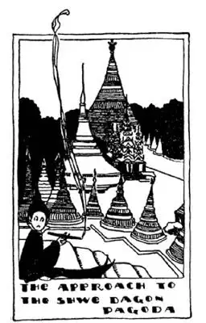
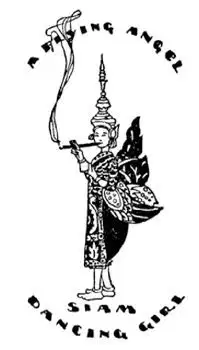
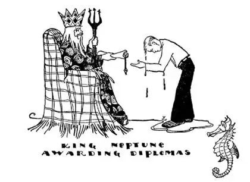

57
The White Elephant
白 象

THERE was once an Indian prince named Gautama. Gautama was rich and had everything in the World he wanted, so he grew up gay and light-hearted. He had never seen any poor people, nor known any misery in his life, so he thought every one in the World was just as well off and just as happy as he. Then one day when he was grown up he went on a trip and, to his amazement, saw for the first time in his life people who were sick, poor, and unhappy. The sights he saw filled him with such pity that he gave up all he had and spent the rest of his life helping the needy. As Gautama went about from place to place he preached that certain things were right and certain things wrong. People began to call him Buddha, which meant “the one who knows,” and to worship him, and thus started a religion called Buddhism. This was about five hundred years before Christ.

去大金字塔之路
It looks like a giant ice cream cone turned upside down
它看起来就像一个倒置的巨大的冰激凌蛋卷
After Buddha died, Buddhists sent missionaries to other countries to teach the people Buddhism too, just as Christians now send missionaries to other lands to teach Christianity. After a long while most of the people in India got tired of Buddhism and took up other newer religions. Many became Mohammedans, but in the countries east of India they still held to Buddhism, although now this worship has become chiefly a worship of idols.
The two countries next door to India are Burma and Thailand. A Mohammedan church is called a mosque, a Buddhist church is called a pagoda. In the capital of Burma—a city called Rangoon—is one of the largest and most wonderful of these pagodas. This pagoda is called the Shwe Dagon Pagoda. It looks like a giant ice cream cone turned upside down and is nearly as high as the Washington Monument. It is built of brick, but the outside is covered with sheets of solid gold—a glorious, dazzling sight in the sunlight. Around the bottom of the pagoda are little cell-like rooms in each of which is an idol, and underneath the center of the pagoda is a box in which, it is said, there are eight hairs from the head of Buddha. On the tip top of the pagoda is—what do you suppose? A church would have a cross, a mosque a crescent, but the pagoda has an umbrella!—with little tinkling bells hanging to it.
Rice is the chief and almost the only food of most of the people in Asia. They eat boiled rice just so, without sugar or cream, and they eat it for breakfast, luncheon, and dinner. Rangoon is the chief rice market of the World.
The people in Burma and Thailand are more like the Chinese than like the people in India. Burma is a republic but Thailand is a kingdom. Until after World War II, Thailand was named Siam. Then the people changed the name of this country of Siam to Thailand. If a man suddenly changed his name from Mr. Jones to Mr. Baker some people would still think of him as Mr. Jones and call him Mr. Jones instead of Mr. Baker. Many people still call Thailand, Siam.

Once, the King of Siam could do anything he wanted with his people. That is what is called an absolute monarchy. When-I-was-a-boy, if any one acted very “bossy” or ordered others around, we used to say, “Who do you think you are? The King of Siam?”
But now the King of Thailand has to rule according to the laws of the country and cannot do just as he pleases the way his ancestors used to do.
The Buddhists believe that when they die their souls go into the bodies of animals. The kings’ souls they think go into the bodies of white elephants, so in Thailand the White Elephant is sacred. The white elephants are, however, more gray than white. Once any white elephant found in a herd had to be presented to the King to bring good luck to him and to the kingdom. Because these royal white elephants did no work, we have come to call something we may have that is of no use, and yet we must keep and take care of, “a white elephant.” A friend of mine has an old worn-out automobile that will not run, that he can neither sell nor give away, and as it takes up space in his garage he calls it his “white elephant.”
In Burma the ordinary gray elephant is used as we use an automobile, truck, or tractor and costs about the same as an automobile does. An elephant carries people, he carries loads, he lifts logs, he plows. A driver sits on the elephant’s head and taps him on one side or the other to let him know just what he is to do and he does it. He works regular hours and knows when it’s time to start work and when it’s time to quit. It is as if he belonged to a labor union, and he will not work at all unless he has had one or more baths each day!
We always say wood will float, but there is a kind of wood in Burma that is so heavy it will not float. It is called “Teak.” They use teak instead of other woods in making furniture, for white ants eat up and destroy anything made out of softer woods. One of the jobs that elephants are used for is hauling, lifting, and loading the heavy logs of teak. I thought I should like to have an elephant myself, so I bought a nice one and brought it all the way home. There it is on my table now. It’s made of bronze.
Stretching down from Thailand like an elephant’s trunk is a long peninsula known as the Malay Peninsula. Just about half a mile offshore from the top of this “trunk” is a bit of an island called Singapore. It was at one time nothing but a jungle in which poisonous snakes and terrible tigers lurked. The owner tried to give it away to get rid of it and couldn’t. Later, however, he sold it to an Englishman named Raffles for almost nothing, and England built a city there. Why do you suppose England wanted such a place at all? Because this spot was another gateway for ships going east or west. There is, as you will see, a narrow passageway between the islands, and this was the only good way for ships to go. Just as in the case of Gibraltar, Suez, and Aden, England wanted to control it. In World War II the Japanese captured Singapore, not with ships from the sea, but with soldiers from the land side of the city. When the Japanese were finally beaten in the war, England again took control of Singapore. Singapore is now one of the most important stopping-places for ships, and in the lobby of the great hotel called “Raffles” you may now see people from all nations of the earth.
Singapore is almost on the Equator—it is almost half-way between the North and South Poles. Sailors call the Equator “The Line.” When you cross “The Line” for the first time you are supposed to be baptized by Father Neptune, the god of the sea. So I was baptized when I crossed it and this was the way it was done. As I stepped out on deck a sailor suddenly appeared on each side of me. One caught me by my arms and the other by my legs and, lifting me in the air, they threw me, with all my clothes on, into a big pool of water that had been made out of canvas on the deck of the ship. Then when I clambered out of the pool, sputtering for my breath, they shoved me into the end of a long canvas pipe, through which I had to crawl. When I came out at the other end they gave me a whack on the back with a paddle. Then I was taken before Father Neptune, a man seated on a throne and dressed up in a bath-robe with a pasteboard crown set on the side of his head, a pitchfork in his hand. He handed me a diploma, as if I were graduating from college, saying that I had been duly baptized and initiated and was now “a regular fellow” in the society of those who had crossed “The Line.”

海神尼普顿颁发合格证书
Neptune handed me a diploma saying I had been duly baptized
尼普顿递给我一张合格证书，并说我已正式受洗
Near the Malay Peninsula are the East Indies and the Spice Islands, which Columbus tried to reach. Sumatra, which is shaped something like a fat cigar, is where the tobacco is grown for making the covers for cigars. Java, another one of the East Indies, was once famous for its coffee. I had looked forward to getting a good cup here, but I tried in a number of places and finally got a cup, but the coffee had come from Brazil!
In Java I saw bats as big as eagles and butterflies as big as your two hands.
【中文阅读】
曾经有位叫乔答摩的印度王子。他很富有，世界上他想要的东西他都有，所以他是快快乐乐、无忧无虑地长大的。他从小到大从未见过穷人，也不知道什么是悲惨的生活，所以，他认为世界上人人都生活得很好，和他一样快乐。成年后，有一天他外出旅行，生平第一次看到了那些病人、穷人和不快乐的人，使他大为惊奇。眼前的一幅幅悲惨的情景，让他内心充满了怜悯。于是，他放弃了所有的财产，用以后的有生之年去帮助那些贫困的人。乔答摩四处布道，教诲人们，什么是对的，什么是错的。人们开始尊称他为“佛陀”，意思是“觉悟者”，并开始崇拜他。这样就产生了一种宗教，叫做“佛教”。这发生在耶稣诞生前500年左右。
乔答摩去世后，佛教徒派遣传教士到其他国家向人们传播佛教，就像现在 的基督徒派遣传教士到其他国家去传播基督教一样。很长一段时间之后，大部分印度人厌倦了佛教，开始接受新的宗教。很多印度人成为伊斯兰教徒。但是，印度以东的一些国家仍坚持信仰佛教，不过只是崇拜佛像。
与印度相邻的两个国家分别是缅甸和泰国。伊斯兰教的教堂叫做清真寺，佛教的教堂叫做佛塔。在缅甸的首都——一个名叫“仰光”的城市，有全世界最大最美的佛塔之一，这个塔叫“大金宝塔”。它看起来就像一个倒置的巨大的冰激凌蛋卷，几乎和华盛顿纪念碑一样高。此塔用砖建成，但是外面覆以片片纯金——阳光下，金碧辉煌，耀眼夺目。塔的底座四周有一些像单人间的小房间，每个房间里都有一尊佛像。在塔的中心下面有一个盒子，据说里面装有佛陀的八根头发。你猜猜塔的顶上有什么东西？教堂上面有一个十字架，清真寺上面有一弯新月，但是塔顶上却是一把伞！——上面挂有一些叮当响的小铃铛。
大米是亚洲大多数人主要的、也几乎是唯一的食物，他们吃煮熟的大米，不放糖也不放奶油，早餐吃米，中餐、晚餐还吃米。仰光是世界上主要的大米市场。
缅甸人和泰国人长得不像印度人，而像中国人。缅甸是共和国，泰国是王国。第二次世界大战之前，泰国被称为暹罗，“二战”结束后才改名为泰国。如果一个人突然将自己的名字从琼斯改成贝克，一些人仍然认为他就是琼斯，还叫他琼斯先生，而不是贝克先生，所以，现在很多人仍然称泰国为暹罗。
过去，暹罗的国王可以对他的人民为所欲为，这就是所谓的君主专制。我小时候，如果有人非常专横或者以命令的口气叫别人干这干那，我们就会说，“你以为你是谁啊？是暹罗的国王吗？”
但是，现在泰国的国王必须按照法律统治国家，不能像他的祖先那样为所欲为了。
佛教徒相信自己死后灵魂会进入动物体内，他们认为国王的灵魂会进入白象体内，因此，在泰国白象是神圣的。不过，白象与其说是白色，还不如说是灰色的。一旦在象群中发现了白象，就必须献给国王，希望它给国家和国王带来好运。因为这些皇家白象不干活、无所事事，所以，如果我们有个无用的东西但又不得不留着它、照顾它，我们就把这个东西叫做“白象”。我的一个朋友有辆破旧的汽车，不能开了，他卖不掉也送不了人，由于它还占着车库的位子，他就把这辆汽车叫做“白象”。
在缅甸，普通的灰色大象可以当做汽车、卡车、拖拉机使用，一头大象的价格和一辆汽车差不多。大象运载人和货物、装卸木料、耕地。驾驭者坐在大 象的头上，轻轻拍打它一侧或者另一侧，让他明白该去做什么，大象就会按指令去做。按固定时间工作，知道什么时候开始干活，什么时候停工，好像它是属于某个工会工人似的，大象每天至少洗一次澡，否则它绝不肯干活。
我们总说木头都会浮在水中，但是在缅甸有一种木头很重，放在水中都浮不起来，这种木头叫做“柚木”。人们用柚木代替别的木头来做家具，因为白蚁可以吃掉并毁坏所有较软木材做的东西。大象常干的工作之一就是帮助装卸这些沉重的柚木木料。我想我自己要有一头大象就好了，于是，我买了一头很可爱的大象，一路把它带回家。现在它就在我的桌子上。它是一件青铜制品。
从泰国向下延伸出的一个长长的半岛，很像大象的鼻子，叫做马来半岛。距“象鼻子”顶端只有半英里远的海上，有一个很小的岛叫“新加坡”。新加坡岛曾经有一个时期只不过是一片丛林，里面藏着很多毒蛇和凶猛的老虎。岛的主人想把它捐赠出去，但没有人要。不过他后来把它卖给了一位名叫“莱佛士”的英国人，价格非常低，几乎是白送。英国就在新加坡岛建了一座城市。你猜英国人究竟为什么想要这样一个地方？因为这儿是东西方船只来往的又一条通道。
你会看到，这些岛屿之间有一条狭窄的通道，这是唯一适合船只通行的航道。就和直布罗陀、苏伊士和亚丁的情况一样，英国又想控制这条通道。第二次世界大战期间，日本人占领了新加坡，不是从海上用军舰攻占，而是从城市陆地一侧派士兵占领的。日本人最终在战争中被打败后，英国重新控制了新加坡。现在，新加坡是来往船只最重要停靠港口之一。在一个叫“莱佛士大酒店”的大厅里，你可以看到来自世界各个国家的人。
新加坡几乎位于赤道上，几乎就在南极和北极之间的中途。水手们称赤道为“中线”。当你第一次穿过“中线”的时候，水手们认为你应该接受海神尼普顿的洗礼。当我坐船经过赤道的时候，也接受了洗礼。洗礼的经过是这样的：当我走上甲板时，我的两侧突然各出现一位水手，一位抓住我的胳膊，一位抓住我的腿，把我举到空中，然后，将衣冠整齐的我就这么扔进甲板上的一个用帆布做的大水池里。当我刚从水池里爬出来，吐出口中的水，大口喘气的时候，他们又把我推进一个很长的帆布管道里，我只得爬过这条管道。当我从另一端出来时，他们用船桨在我的背部拍了一下，然后我就被带到海神尼普顿面前——一位男士坐在宝座上，穿着浴袍，头上斜戴着一顶硬纸板做的王冠，手执干草戟。他递给我一张证书，好像我大学刚毕业一样，并说我已正式受洗并被接纳，现在已是跨过“中线”的这一阶层中的“合格成员”。
靠近马来半岛有东印度群岛和香料群岛，就是哥伦布当年想到的地方。苏门答腊岛，形状像个胖雪茄，岛上种植烟草用来做雪茄的外包叶。爪哇岛，东印度群岛中的另一个岛屿，曾经以产咖啡而闻名。我曾盼望在岛上喝上一杯上好的咖啡，但是我试了好几个地方终于喝了一杯，却发现这咖啡竟然是巴西产的。
在爪哇，我看见大如老鹰的蝙蝠和与你双手一样大的蝴蝶。